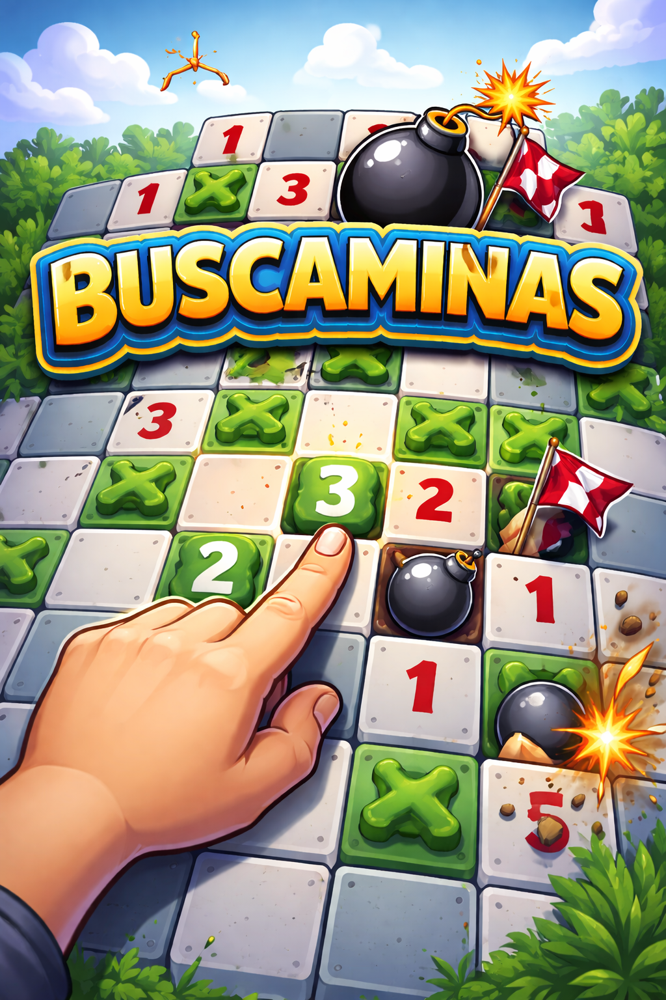

¡Hola y bienvenido al Buscaminas!

Aquí podrás disfrutar del mítico juego que ha acompañado a generaciones. Demuestra tu habilidad, evita las minas y consigue la mejor puntuación. Cuando estés listo, entra al tablero y comienza la partida.